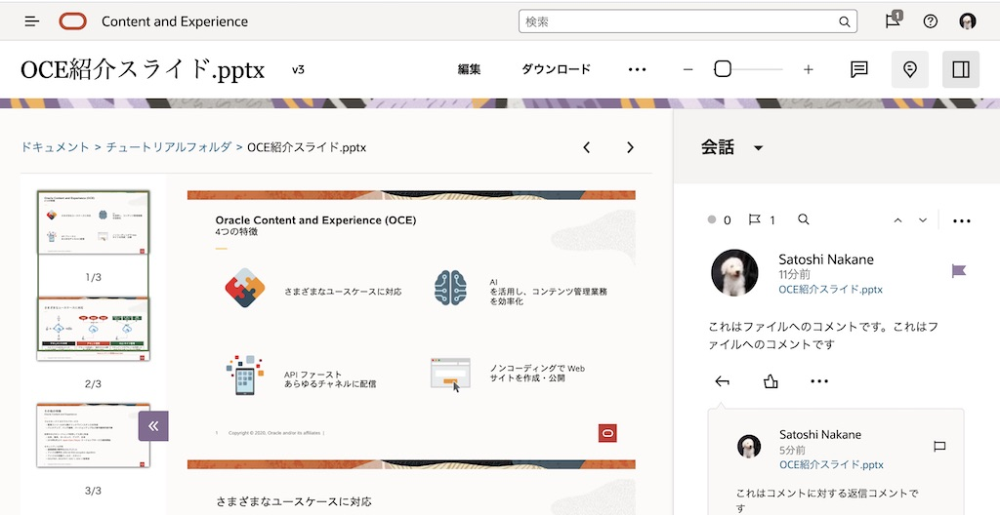
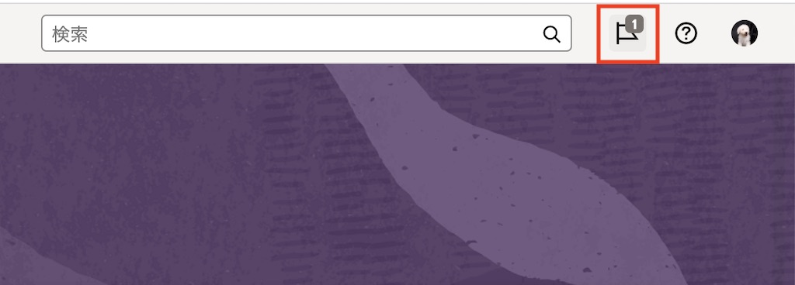
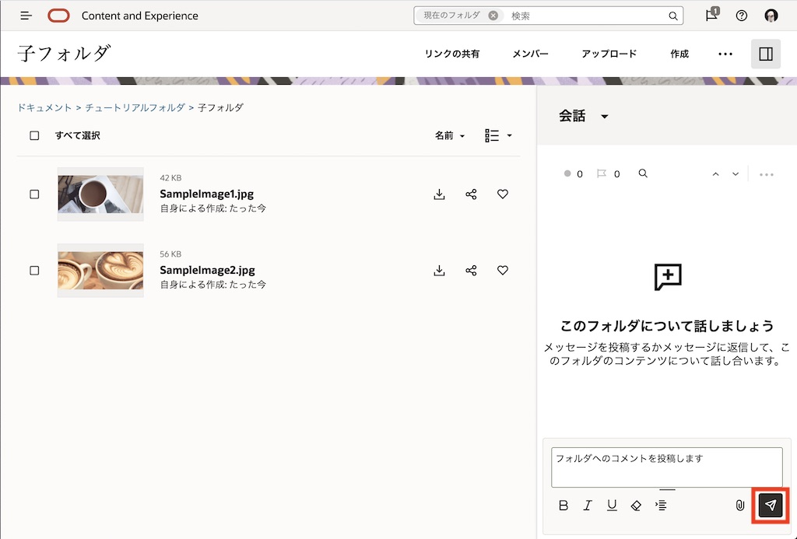
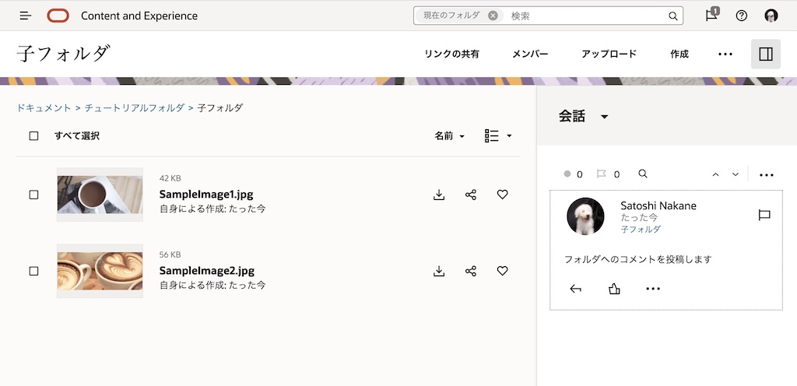
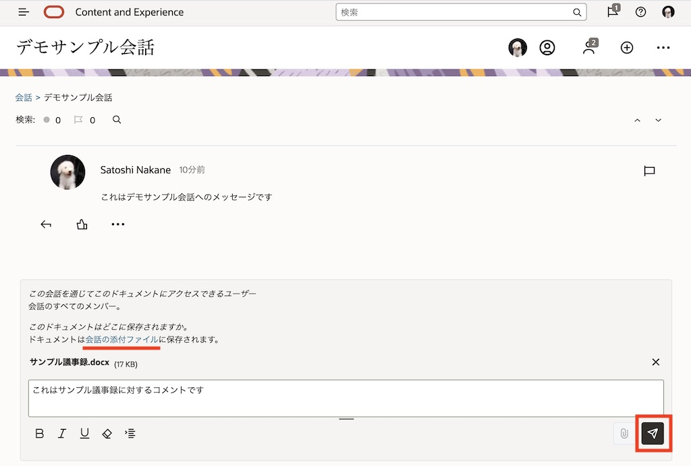

目次に戻る: Oracle Content Management のファイル共有機能を使ってみよう【初級編】
OCM の会話とは、コメントを投稿したり、特定の話題についてディスカッションしたり、他のユーザーとリアルタイムでメッセージをやりとりする機能です。会話は Webブラウザだけでなく、デスクトップやモバイルからも利用できるため、デバイスや場所を問わず、迅速なコラボレーションが可能です
会話でやりとりされるコメントは、未読・既読の設定、コメントへの返信、ハッシュタグ（＃）やLIKE（いいね）の設定ができます。また、コメントに対してフラグを設定することで他のユーザーの注意を喚起することができます
OCM の会話は、2パターンあります
-
特定のフォルダ・ファイルに紐付く会話
-
単独利用の会話（特定のファイル・フォルダに紐付かない会話）
【お知らせ】
この文書は、2021年11月時点での最新バージョン(21.11.1)を元に作成されてます。
チュートリアル内の画面ショットについては、現在のコンソール画面と異なっている場合があります。
前提条件
- Oracle Content Management インスタンスを作成する
- OCM の利用ユーザーに OCM インスタンスの CECStandardUser もしくは CECEnterpriseUser アプリケーション・ロールが付与されていること
1. ファイル・フォルダに紐づく会話
1.1 ファイルに紐付く会話を作成する
-
ファイルをプレビューします
-
右上のサイドバーの 表示アイコン をクリックします

-
「会話」 を選択します。右ペインに会話パネルが開きます

-
“会話へメッセージを投稿します” をクリックし、コメントを入力します。投稿ボタン をクリックします

-
メッセージが投稿されると同時に、会話が作成されます

-
ファイルの一覧表示画面に戻ります。会話が紐づけられたファイルは、会話アイコン が表示されます

-
会話アイコン をクリックすると、ファイルのプレビューとそのファイルに紐付く会話が表示されます
1.2 投稿されたコメントに返信する
-
ファイルをプレビューし、会話パネルを開きます
-
投稿済みのコメントの 返信アイコン をクリックし、返信コメントを入力します。「投稿」 をクリックします

-
コメントへの返信が投稿されます

1.3 投稿したコメントにフラグを設定する
-
ファイルをプレビューし、会話パネルを開きます
-
投稿済みのコメントの フラグアイコン をクリックします
-
フラグ設定するユーザーのフラグ優先度を選択します。ここでは、「参考情報」 を選択します

-
コメントにフラグが設定されます

-
フラグを設定したユーザーに対して、フラグ設定の通知が行われます。Web ブラウザの場合、右上のフラグアイコン に通知数が表示されます。
-
画面右上の フラグアイコン をクリックします

-
フラグ設定されたメッセージの一覧が表示されます

-
通知されたメッセージをクリックすると、そのメッセージ表示画面が開きます（この場合は「OCE紹介スライド」のプレビューとそのファイルに紐付く会話が表示されます）
-
フラグアイコン→ 「クリア」 をクリックすると、フラグ通知をクリアできます。クリアすると、画面右上の通知数も消えます

[TIPS] フラグの通知設定は、各ユーザーの 「プリファレンス」→「会話」 メニューよりカスタマイズできます。また、デスクトップ・アプリケーションやモバイル・アプリケーションも、それぞれフラグ設定時の通知をプリファレンス（設定）よりカスタマイズできます
1.4 ファイルに注釈を設定する
-
ファイルをプレビューします
-
注釈の追加アイコン をクリックします

-
注釈を追加するプレビューの領域を選択し、コメントを投稿します

-
注釈付きのコメントが入力されます。注釈をクリックすると、注釈に対応するコメントがハイライト表示されます
-
プレビュー画面上の注釈を非表示にするには、画面右上の 注釈の表示アイコン をクリックします。もう一度クリックすると、注釈が表示されます

1.5 フォルダに紐付く会話を作成する
-
注釈を設定するフォルダを開きます
-
右上のサイドバーの 表示アイコン をクリックします
-
会話 を選択します。右ペインに会話パネルが開きます
-
“会話へメッセージを投稿します” をクリックし、コメントを入力します。「投稿」 をクリックします

-
メッセージが投稿されると同時に、会話が作成されます。ここでは「子フォルダ」というフォルダに対する会話が作成されてます

2. 単独利用の会話
2.1 単独利用の会話を作成する
-
左ナビゲーションメニューの 「会話」 をクリックします
-
「作成」 をクリックします

-
会話タイトルを入力し、「作成」 をクリックします

-
会話が作成されます。画面したの投稿エリアよりメッセージを投稿します

[TIPS]
会話内の操作（コメント投稿、コメントへの返信、フラグ、LIKE）は、ファイルやフォルダ紐付きの会話と同じです
2.2 会話にメンバーを追加する
-
単独利用の会話を開きます。ここでは先ほど作成した会話（デモサンプルの会話）を開きます
-
右上の 「メンバー」 をクリックします

-
「メンバーの追加」 をクリックします

-
メンバーを入力すると、選択候補が表示されます。追加するメンバーを選択し、「追加」 をクリックします
[TIPS]
会話へのメンバー追加は、個々のユーザーもしくはグループを選択できます。また、メンバー追加の操作は、フォルダへのメンバー追加と同じです。 -
会話にメンバーが追加されます。「完了」 をクリックします

2.3 会話にファイルを添付する
2.3.1 ローカル環境にあるファイルを会話に添付する
-
単独利用の会話を開きます。ここでは先ほど作成した会話（デモサンプルの会話）を開きます
-
投稿エリア右端の ドキュメントの追加アイコン→このコンピュータからアップロード を選択します

-
会話に添付するローカル環境上のファイルを選択します
-
「ドキュメントは ドキュメント に保存されます。」の ドキュメント をクリックします

-
OCM 上のフォルダを選択します。既存のフォルダを選択する、もしくは「作成」をクリックして新規フォルダを作成・選択することもできます。ここでは既存の 「会話の添付ファイル」 フォルダを選択します

-
必要に応じてコメントを入力し、「投稿」 をクリックします

-
会話にファイルが添付されます。「展開ビュー」 をクリックします

-
添付ファイルのプレビューと、単独利用の会話が1つの画面で表示されます

2.3.2 OCM のフォルダにあるファイルを会話に添付する
-
単独利用の会話を開きます
-
投稿エリア右端のドキュメントの追加アイコン→Oracle Content Managementからアップロード を選択します

-
OCM のフォルダからファイルを選択します。必要に応じてコメントを入力し、「投稿」 をクリックします
-
会話にファイルが投稿されます。展開ビュー をクリックします

-
添付ファイルのプレビューと、単独利用の会話 が1つの画面で表示されます

2.4 会話を管理する
-
左ナビゲーションメニューの 「会話」 をクリックします
-
ファイル・フォルダ紐付けの会話には、フォルダアイコンが表示されます。フォルダアイコンが表示されていないのは、単独利用の会話です

-
前の手順で作成した単独利用の会話（ここではデモサンプル会話）を開きます
-
メニューアイコンをクリックし、「会話のミュート」 をクリックします

-
会話がミュートされます。
-
左ナビゲーションメニューの 「会話」 をクリックし、会話の一覧ページに戻ります
-
先ほどミュートした会話が消えます。ミュートした会話を確認するには、会話の 「ミュート済」 を選択します

-
先ほどミュートしたの会話が表示されます

[TIPS]
ミュートの他に会話のクローズ・再オープン、破棄、メンバーシップメッセージの表示、お気に入りの追加などができます。詳細は下記ドキュメントを参照してください
以上でこのチュートリアルは終了です。